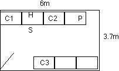
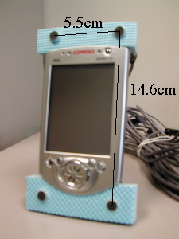

Overview
In this package, you will find two sets of PDA speech data.
- Single microphone data recorded by a real PDA (PDAs)
- Multiple microphone data recorded by a PDA-like mock-up (PDAm)
In both sets, sentences are read by CMU students/staff. The numbers
of male and female speakers are not equal but well balanced. However,
the age distribution is biased with the peak around 20. All speakers
are native speakers of American English. All files referred to in this
page can be found in the directory ../lists
Environment
The recording was done at Carnegie Mellon University, in Room
NSH 4622. As shown in the figure below, the room size is 6.0m(L)
x 3.7m(W) x 2.8m(H). The speaker (S) was sitting on a chair, facing
the wall. The distance to the wall was about 0.75m. The distance to
the wall on the left side of the speaker was about 2.0m. When the
recording session of PDAm was done, there were three computers (C1,
C2, C3),a printer (P) and a small humidifier (H). C1 is noisy but C2,
C3, and P are quiet. H was turned on to make more noise only when
speakers #9-#16 were speaking. In the PDAs session, the arrangement of
noise sources was not recorded in detail, but there were several
computers and no humidifier. In all sessions, the speaker held a PDA
by hand (either left or right) and read the sentences that appeared on
the screen.

PDAs data set
In the PDAs data set, the voice was recorded with a Compaq iPAQ 3630
built-in microphone and an Optimus Nova 80 close-talk microphone. The
iPAQ data were recorded using the AD converter in the iPAQ, and the
close-talk data were recorded using a Creative Sound board (except for
speakers #1 & 2). Both channels were recorded with a 11.025kHz sampling.
There are 11 speakers. However, you are advised to use speakers #4-#11
only because (1) speakers #1 & 2 used a different sound board, and (2)
speaker #3's voice was too soft.
The file name follows the convention "PDAsXX_YYY_Z.wav
(e.g. "PDAs04_001_1.wav"). "PDAs" is the data set name, followed by
the speaker id XX, utterance id YYY, and channel id Z. Channel 1
corresponds to iPAQ built-in microphone, and Channel 2 is the
close-talk. The files were saved in MS Wave format.
Each speaker read about 140 sentences. The first 40-43 come from
the WSJ 5k test data set. The remaining of sentences are from the WSJ
training data set. The transcriptions for speakers #4-11 are given in
"PDAs.test.sent" and "PDAs.train.sent". The transcriptions for all
eleven speakers are given in files "PDAs.test_all.sent" and
"PDAs.train_all.sent" include all 11 speakers. Each of these files has
a corresponding control file, ending with the extension ".ch1.ctl",
which contains the relative path to the audio files containing the
channel 1 recordings.
PDAm data set
In the PDAm data set, the voice was recorded by four small microphones
mounted around a PDA, and an Optimus Nova 80 close-talk microphone. The small
microphones (Panasonic WM-55DC2) were mounted around the PDA using a
mock-up shown in the photo below.
All five signals were sent to a hand-crafted amplifier, and the
outputs of the amplifier were recorded by a multi-channel recorder, at
44.1kHz sampling rate. The original data was then downsampled to both
16kHz and 11.025kHz. The original 44.1kHz data CD-ROM is kept by the
Robust Speech Recognition group, although the original wave files are
not split into utterances.

The file names follow the same convention as the PDAs files, but
start with "PDAm" instead of "PDAs". Channel 1 is the top-left
microphone, and Channels 2-4 are the top-right, bottom-left, and
bottom-right, respectively. Channel 5 is the close-talk.
Each speaker read about 50 sentences. The first 40-43 are the same
as the PDAs test set. (In fact, speaker #7 committed two mistakes
while reading, and the transcript file reflects the uttered sentences)
The last 11 utterances of each speaker are connected digits. The
complete transcriptions are given by "PDAm.wsj.sent" and
"PDAm.digits.sent". The corresponding files with extension ".ch1.ctl"
contain the relative path to the channel 1 audio files.
.
2003 Yasunari Obuchi